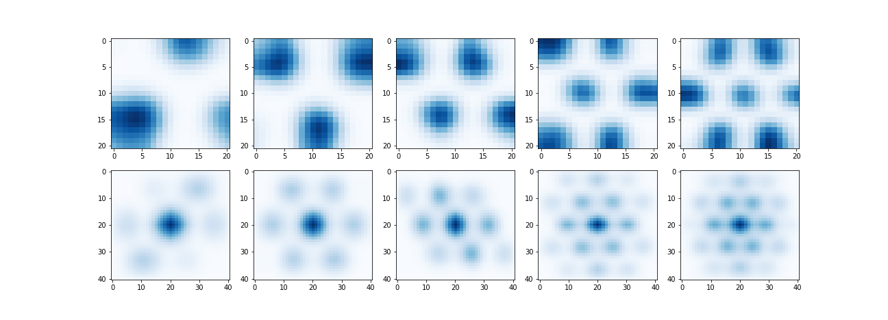

Source: Nobel Foundation
The grey dot represents the animal spatial navigation
Three simulated grid cell populations with different scale (increasing from dorsal to ventral)

I'm always up for collaborations and to try out ideas.
Feel free to suggest something crazy: